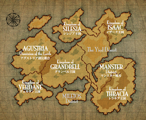

かつて、ユグドラル大陸のユン河西域に成立したグラン王国は、共和制へと形を変えながら緩やかに領土を拡大し、永きに渡って盛栄の時代を謳歌していた。しかし、不思議な力を求めて世界中を旅していた一介の聖職者に過ぎないガレ司教が、旅の過程で得た不思議な力を備えて歴史の表舞台へ登場したところから、世界は暗転し始める。
ABOUT HOLLY WAR/聖戦の系譜とは

暗黒神が降臨したと形容される圧倒的な能力を用いて、ガレ司教は若者達を感化させてロプト教団を創立する。そして、自分の意のままに動く悪魔の軍団を作り上げると、ついには共和国グランを滅ぼし、ガレ司教を皇帝に戴くロプト帝国を建国するに至った。ロプト帝国は絶対的な階級制度を敷き、異教徒の弾圧と虐殺を繰り返し、さらには暗黒神への生贄として大規模な子供狩りを行い、人々を恐怖と絶望の淵へ突き落とした。
そんな暗黒の治世が100余年も続こうかという頃、世界を憂えた時の皇帝の弟マイラがロプト帝国に対して反旗を翻した。反乱は程なく鎮圧されるものの、その後に興る自由解放軍の小さな礎となった。だが、それから20年余に渡って世界各地で繰り広げられた自由解放軍の戦いも、次第に帝国に追い詰められ、ついにはイード砂漠のダーナ砦にわずかばかりの戦士が残るのみとなった。
余力も無く傷ついた彼らが最後の戦いを覚悟していたその時、奇跡が起こる。神々が天より舞い降り、12人の戦士へ不思議な武器と能力を授けたのだ。やがて彼らは人々から12聖戦士と呼ばれ、解放軍を率いて帝国との聖戦を戦った。聖戦は15年の歳月を要したが、ついに彼らは時の皇帝ガレ17世とロプト帝国を滅ぼし、大陸に平和をもたらしたのである。

その後、聖戦士の1人、聖者ヘイムは大陸中央へグランベル王国を建国、他の聖戦士達もグランベル王国の6公国と、周辺の5王国を興し、それぞれの国は12聖戦士の血統の者により治められた。
それから無数の昼と夜がめぐり、今、再び動乱の時代が幕を開ける。